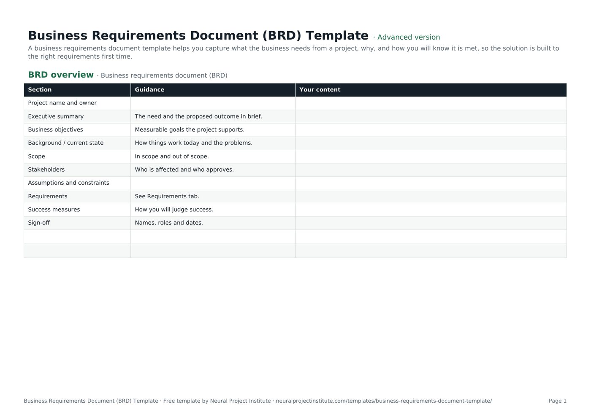

Templates · Requirements & analysis
Business Requirements Document (BRD) Template
This free business requirements document template gives you a structured BRD in two parts: a BRD overview for objectives, scope, stakeholders and sign-off, and a requirements log where each requirement has an ID, type, rationale, MoSCoW priority, source, acceptance criteria and status. Download it for Google Sheets, Excel or PDF, in a beginner, advanced or expert version.

Key takeaways
- A business requirements document (BRD) records what the business needs from a project and why, and how you will know each need has been met. It describes the need, not the solution.
- The template has two tabs: a ten-section BRD overview and a requirements log with eight columns and dropdowns for type, priority and status.
- Good requirements are solution-free, testable, written one per row and traced to a business objective and a source.
- Prioritise with MoSCoW and be strict: if everything is a Must, nothing is.
- Get sign-off before design or procurement starts, then control changes through a change request process.
Free download · no sign-up
Get the business requirements document template
Pick your level and format: Google Sheets, Excel or a print-ready PDF. Spreadsheets include dropdowns, formulas and sample rows you can overwrite.
What is a business requirements document?
A business requirements document (BRD) is a document that sets out what a business needs from a project or solution, why it needs it and how success will be measured. It covers objectives, scope, stakeholders, constraints and a list of prioritised requirements with acceptance criteria. It describes what is needed, not how it will be built.
A BRD is usually written early in a project, after the idea has been approved in a business case or project charter and before design, development or procurement begins. It gives the people who will build or buy the solution a clear, agreed target, and it gives the sponsor a basis for accepting the result at the end.
Business analysts usually write BRDs, but on smaller projects the project manager or product owner often does. Whoever writes it, the content comes from stakeholders: the BRD is a record of what they need, checked and agreed.
For the wider picture of high-level and detailed requirements, see our project requirements guide.
BRD template preview
The first tab is the BRD overview. Each section has a short prompt in the Guidance column; your answers go in Your content.
| Section | Guidance | Your content |
|---|---|---|
| Project name and owner | ||
| Executive summary | The need and the proposed outcome in brief. | |
| Business objectives | Measurable goals the project supports. | |
| Background / current state | How things work today and the problems. | |
| Scope | In scope and out of scope. | |
| Stakeholders | Who is affected and who approves. |
Sample rows are examples: replace them with your own.
What's in the BRD template
The template is a spreadsheet with two tabs that work together. The BRD overview sets the context in ten short sections; the Requirements tab lists every requirement in a structured, filterable log.
- BRD overview: Section, Guidance, Your content
- Requirements: ID, Requirement, Type, Rationale, Priority (MoSCoW), Source, Acceptance criteria, Status
BRD overview tab
Three columns (Section, Guidance, Your content) and ten sections: project name and owner, executive summary, business objectives, background / current state, scope, stakeholders, assumptions and constraints, requirements (which points to the Requirements tab), success measures, and sign-off.
Requirements tab
Eight columns: ID, Requirement, Type, Rationale, Priority (MoSCoW), Source, Acceptance criteria and Status. In the advanced and expert versions, three columns have dropdowns:
- Type: Functional, Non-functional, Constraint, Data, Reporting.
- Priority (MoSCoW): Must, Should, Could, Won't.
- Status: Draft, In review, Approved, Rejected, Deferred.
Four sample requirements for a customer portal project show how to fill each column; overwrite them with your own.
Which version should you download?
| Version | What you get | Best for |
|---|---|---|
| Beginner | The BRD overview tab only: ten sections with guidance, plus blank rows | Small projects where requirements fit in a few paragraphs |
| Advanced | Both tabs: the BRD overview and the full eight-column requirements log with Type, Priority (MoSCoW) and Status dropdowns | Most projects with a business analyst or several stakeholder groups |
| Expert | Everything in Advanced, plus an instructions tab, a dashboard that counts requirements by type, MoSCoW priority and status automatically, colour-coded statuses (approved, in review, rejected) and a revision history tab | Larger projects, procurements and PMOs that report on requirements progress |
What to include in a business requirements document
The ten overview sections give readers the context they need before they reach the requirements themselves. Here is what to write in each.
| Section | What to write | Example |
|---|---|---|
| Project name and owner | The project and the business owner accountable for the requirements | Customer Portal; Head of Customer Service |
| Executive summary | The need and the proposed outcome in a few sentences. Write it last | Customers cannot view invoices or reset passwords themselves, so they call support. A self-service portal will reduce calls. |
| Business objectives | Measurable goals the project supports | Cut account-related calls by 30% within 6 months of launch |
| Background / current state | How things work today and the problems | All account changes go through the support team by phone or email |
| Scope | What is in scope and out of scope | In: account view, invoices, password reset. Out: mobile app, payments |
| Stakeholders | Who is affected and who approves | Customer service, IT, Finance, Legal, customers |
| Assumptions and constraints | What you assume and the limits you must work within | Billing API available by February; data must stay in the EU |
| Requirements | A pointer to the Requirements tab | See Requirements tab (BR-01 to BR-04) |
| Success measures | How you will judge success after delivery | Call volumes, portal adoption, customer satisfaction |
| Sign-off | Names, roles and dates of approvers | Sponsor, Head of IT, Data Protection Officer |
Many published BRD formats also include a cost-benefit analysis. If your project already has a business case, link to it rather than repeating the numbers; the BRD should stay focused on needs. Our guide to cost-benefit analysis explains the method if you need one.
How to write good business requirements
The requirements log is the heart of the BRD. A good requirement is:
- Needed: it supports a business objective. If you cannot say which, question it.
- Solution-free: it states what is needed, not how to build it. "Customers must be able to reset their password without contacting support" leaves the design open.
- Clear: one reasonable reading only. Avoid words like "user-friendly", "fast" or "flexible" without a measure.
- Testable: someone can check it was met. That is what the acceptance criteria column is for.
- Atomic: one requirement per row. Split anything joined by "and".
- Traceable: it has an ID, a source (a person, document, regulation or data) and a rationale.
| Weak requirement | Better requirement | Why it is better |
|---|---|---|
| The portal should be fast | Pages must load in under 2 seconds (95th percentile) | Measurable and testable |
| Use a password reset link emailed via the CRM | Customers must be able to reset their password without contacting support | States the need, not the solution |
| Customers can see invoices and update their address | Two rows: one for viewing invoices, one for updating the address | One requirement per row, so each can be prioritised and tested |
| Comply with data rules | Customer data must be stored in the EU | Specific, with a clear source (Legal / GDPR policy) |
Requirement types
The template's Type dropdown keeps the log easy to filter: Functional (what the solution must do), Non-functional (how well it must do it, such as performance, availability, security or usability), Constraint (limits such as regulation, technology or budget), Data and Reporting.
If your organisation follows the IIBA's BABOK Guide, you will see a broader classification: business requirements (the goals and outcomes), stakeholder requirements (the needs of particular groups), solution requirements (split into functional and non-functional) and transition requirements (what is needed to move from the current to the future state, such as data migration or training). You can add these as extra options in the Type list.
Prioritising with MoSCoW
MoSCoW sorts requirements into four groups, and the template's Priority column uses them:
| Priority | Meaning | Test |
|---|---|---|
| Must | Without it, the solution fails or is not legal or safe | Would you cancel the launch if this were missing? |
| Should | Important but there is a workaround | Painful to leave out, but the solution still works |
| Could | Desirable if time and budget allow | Nice to have; first to go under pressure |
| Won't (this time) | Agreed as out of scope for now | Recorded so the decision is visible |
The common mistake is marking almost everything as Must. Ask the "would you cancel the launch?" question for each one. Recording Won't items is just as useful: it stops the same request coming back every month.
Writing acceptance criteria
Acceptance criteria describe how you will confirm a requirement has been met. Keep them specific and observable: "reset completed in under 2 minutes", "all invoices since 2024 visible", "hosting region confirmed as EU". They become the basis for testing and for the sponsor's acceptance at the end of the project, and they link naturally to your quality management approach.
How to fill in the BRD template step by step
- Start from the charter or business case. Copy the objectives and scope so the BRD stays consistent with what was approved.
- Identify stakeholders. List everyone who uses, runs, pays for or regulates the solution. Our guide to stakeholder management shows how to analyse them.
- Describe the current state. Record how things work today and what goes wrong. Evidence such as call data or survey results helps.
- Gather requirements. Use interviews, workshops, observation, document review and data. Note the source of each requirement as you go; meeting notes from workshops are a useful record.
- Write each requirement on its own row. Give it an ID, a clear statement, a type and a rationale linked to an objective.
- Prioritise and add acceptance criteria. Agree MoSCoW priorities with the business owner and write a test for each requirement.
- Review with stakeholders. Walk through the log, resolve conflicts and update statuses from Draft to In review to Approved.
- Get sign-off and baseline it. Ask the named approvers to sign the overview. From then on, changes go through change control using a change request.
Business requirements document example
The template's sample rows describe a customer portal project. Here is the requirements log as it ships, with a note on why each row is written the way it is.
| ID | Requirement | Type | Priority | Acceptance criteria | Status |
|---|---|---|---|---|---|
| BR-01 | Customers must be able to reset their password without contacting support | Functional | Must | Reset completed in under 2 minutes | Approved |
| BR-02 | The portal must show the last 24 months of invoices | Functional | Must | All invoices since 2024 visible | Approved |
| BR-03 | Pages must load in under 2 seconds | Non-functional | Should | 95th percentile under 2 s | Draft |
| BR-04 | Data must be stored in the EU | Constraint | Must | Hosting region confirmed | Approved |
- BR-01 comes from support data and directly serves the objective of reducing calls, so it is a Must.
- BR-02 comes from a customer survey and has a clear boundary (24 months), which avoids an open-ended data migration.
- BR-03 is a non-functional requirement from UX research. It is still a Draft because the 2-second target has not yet been agreed with IT.
- BR-04 is a constraint from Legal based on GDPR policy. It is a Must because the solution could not go live without it.
Each row traces back to an objective (fewer calls), a source and a rationale. That traceability is what lets you answer "why are we building this?" six months later, and it lets you drop the right requirements first if time runs short.
BRD vs FRD, SRS, PRD and user stories
Requirements documents overlap and names vary between organisations. This table shows the usual distinctions.
| Document | Focus | Typical author | Main readers |
|---|---|---|---|
| Business requirements document (BRD) | What the business needs and why; objectives, scope, high-level requirements | Business analyst | Sponsor, business stakeholders, delivery team |
| Functional requirements document (FRD) / functional specification | How the solution will behave to meet the business requirements | Business or systems analyst | Designers, developers, testers |
| Software requirements specification (SRS) | Detailed functional and non-functional requirements for a software system | Systems analyst or architect | Developers, testers, suppliers |
| Product requirements document (PRD) | What a product or release should do for its users, often feature by feature | Product manager | Product, design and engineering teams |
| User stories | Small, user-focused slices of functionality with acceptance criteria | Product Owner with the team | Scrum or Agile team |
| Statement of work (SOW) | What a supplier will deliver and on what terms | Buyer, often with procurement | Suppliers |
A BRD often feeds an RFQ or a statement of work when the solution will be bought rather than built, and it feeds the project scope statement on every project.
Using a BRD in Agile projects
Agile teams rarely write a long BRD up front, but the thinking behind it is still useful. A short BRD that records objectives, scope boundaries, constraints and the main business requirements gives the Product Owner and the team a shared target.
The detail then moves into the Product Backlog as user stories, each traced back to a business requirement ID. Non-functional requirements and constraints often become part of the team's Definition of Done. The beginner version of the template, the overview tab alone, is usually enough for this; pair it with our user story template or product backlog template.
Common BRD mistakes
- Designing the solution. Screen layouts and technology choices belong in the design, not the BRD.
- Vague words. "Easy", "fast" and "secure" need a measure or they cannot be tested.
- Everything is a Must. Without real priorities, the team cannot make trade-offs when time runs short.
- Missing stakeholders. Requirements from Legal, Finance, Security or operations teams often surface late and cause rework.
- No source or rationale. Requirements nobody can explain are hard to defend and easy to gold-plate.
- Skipping sign-off. Without approval, the BRD is a draft and scope stays open. See scope creep.
- Treating it as fixed forever. Requirements change. Baseline the approved BRD and manage changes openly rather than editing it quietly.
Related templates and guides
A BRD sits in a chain of documents. Before it come the business case template and project charter template; alongside it, the problem statement template and gap analysis template frame the need; after it, the project scope template, user story template and change request template carry the requirements into delivery. A RACI matrix template helps you agree who writes, reviews and approves them.
 Project Scope Statement TemplateFree project scope template: objectives, deliverables, in scope, out of scope, acceptance…Beginner · Advanced · Expert
Project Scope Statement TemplateFree project scope template: objectives, deliverables, in scope, out of scope, acceptance…Beginner · Advanced · Expert User Story TemplateFree user story template: As a / I want / so that, acceptance criteria, epic, estimate…Beginner · Advanced · Expert
User Story TemplateFree user story template: As a / I want / so that, acceptance criteria, epic, estimate…Beginner · Advanced · Expert Gap Analysis TemplateFree gap analysis template comparing current and future state, scoring each gap and…Beginner · Advanced · Expert
Gap Analysis TemplateFree gap analysis template comparing current and future state, scoring each gap and…Beginner · Advanced · Expert Problem Statement TemplateFree problem statement template: who is affected, what, where and when, impact, evidence,…Beginner · Advanced · Expert
Problem Statement TemplateFree problem statement template: who is affected, what, where and when, impact, evidence,…Beginner · Advanced · Expert Root Cause Analysis (5 Whys) TemplateFree root cause analysis template using the 5 whys: problem statement, why chain, root…Beginner · Advanced · Expert
Root Cause Analysis (5 Whys) TemplateFree root cause analysis template using the 5 whys: problem statement, why chain, root…Beginner · Advanced · Expert- Project Requirements: High-Level and Technical Requirements
- Project Stakeholder Management: Identify, Analyse, Engage
- Project Scope: Definition, Scope Statement and Examples
- User Stories: How to Write Them, With Templates and Examples
To learn how high-level and detailed requirements fit together, read our project requirements guide.
Frequently asked questions
What is a business requirements document template?
A business requirements document template is a ready-made structure for recording a project's business objectives, scope, stakeholders, constraints and requirements, each with a priority and acceptance criteria. This one has a BRD overview tab and a requirements log.
Is this BRD template free?
Yes. The business requirements document template is free to download in Google Sheets, Excel and PDF, with no sign-up.
What should a business requirements document include?
An executive summary, business objectives, background and current state, scope, stakeholders, assumptions and constraints, the requirements themselves with priority and acceptance criteria, success measures and sign-off.
Who writes a business requirements document?
Usually a business analyst, working with stakeholders, the sponsor and the project manager. On smaller projects the project manager or product owner often writes it.
Who approves the BRD?
The sponsor or business owner approves it, usually with the heads of the main stakeholder groups and any specialists, such as Legal or Security, whose requirements it contains.
What is the difference between a BRD and an FRD?
A BRD states what the business needs and why. A functional requirements document (FRD) describes how the solution will behave to meet those needs, in enough detail for designers, developers and testers.
What are the types of business requirements?
This template uses functional, non-functional, constraint, data and reporting. The IIBA's BABOK Guide classifies requirements as business, stakeholder, solution (functional and non-functional) and transition requirements.
How long should a BRD be?
As short as it can be while still being clear. A small project may need a few pages; a large system or procurement may need many more. Keep context in the overview and put each requirement on its own row in the log.
When should you write a BRD?
After the project has been approved in principle through a business case or charter, and before design, development or procurement starts.
How do you prioritise business requirements?
Use MoSCoW: Must, Should, Could and Won't have this time. Agree priorities with the business owner and test each Must by asking whether you would cancel the launch without it.
Can Agile teams use a business requirements document?
Yes, at a high level. Use a short BRD for objectives, scope, constraints and key business requirements, then capture the detail as user stories in the product backlog.
What happens if requirements change after sign-off?
Raise a change request, assess the impact on scope, schedule and cost, and get approval before updating the BRD. Record the change and its decision so the baseline stays clear.
Can I use the BRD template in Word?
The download is a spreadsheet and a PDF. You can copy the overview sections into a Word document if your organisation prefers Word and keep the requirements log in the spreadsheet, where it is easier to filter and sort.